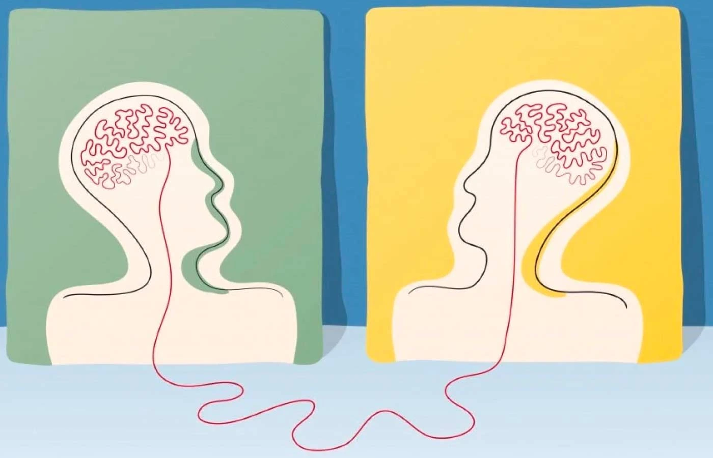
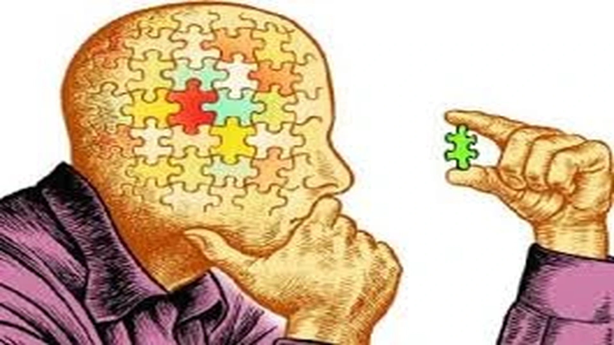

Conhecimento
Senso Comum: A Sabedoria Popular
O senso comum se baseia como um modo de pensamento em que ainda não foi testado, verificado ou analisado. Neste caso, serve como uma base de informações que nos ajuda a lidar com a realidade, sem a necessidade de recorrer a explicações complexas ou teorias científicas, podendo ser definido como um conjunto de ideias e saberes considerados óbvios, naturais ou intuitivos pela maioria das pessoas.
Ensinamentos Geracionais
Fonte: Global Sources
Dessa forma, transmitindo de geração em geração, por meio de cultura, tradições e até ditados populares, com isso o senso comum, por ser obtido a partir de um movimento de repetição cultural, pode estar correto ou não.
Diálogo
Fonte: Pinterest
Características do Senso Comum:
• Intuitivo e Prático: O senso comum é muitas vezes baseado em intuições e práticas cotidianas. Nos permitindo tomar decisões rápidas sem a necessidade de um grande esforço de reflexão
• Baseado em Experiência: Ao contrário de teorias científicas ou acadêmicas, o senso comum tem origem em experiências pessoais e coletivas. Refletindo uma visão sensata do mundo, construída por meio da observação do cotidiano, no qual as pessoas, em sua maioria, confiam mais em experiências vividas do que em explicações técnicas ou abstratas.
Conversa
Fonte: Freepik
• Simplificador: Neste caso, tende a simplificar a complexidade do mundo, criando soluções rápidas para situações do dia a dia e ao invés de complicar, ele busca soluções diretas e compreensíveis para todos.
• Cultural e Histórico: Varia de acordo com o contexto cultural e histórico em que está inserido, sendo considerado senso comum em uma sociedade, mas podendo ser totalmente diferente em outra. Além disso, ele está sujeito a mudanças ao longo do tempo, com novas ideias e valores sendo incorporados à sociedade.
Folclore
Saga Gráfica
Ditados Populares:
"Quem faz o bem, recebe o bem": Essa crença muito comum que reflete um princípio de reciprocidade e moralidade. Muitas pessoas acreditam que, ao praticarem boas ações, algo de positivo acontecerá em retorno, mesmo que isso não seja comprovado de maneira científica.
"É melhor prevenir do que remediar": Conselho que circula amplamente no senso comum e que reflete uma sabedoria prática sobre a importância da prevenção, seja em relação à saúde ou em relação a problemas cotidianos.
"Homem não chora": Uma ideia fortemente enraizada no senso comum que está relacionada a normas sociais e culturais sobre o que é esperado de cada gênero. A crença de que os homens devem ser fortes o tempo todo, sem demonstrar emoções como tristeza.
"A primeira impressão é a que fica": Muitas vezes ouvimos esse ditado em contextos sociais e profissionais, sugerindo que o julgamento que alguém faz de você na primeira interação é definitivo e difícil de mudar.
"Dinheiro não traz felicidade": Esse é um pensamento que muitas pessoas consideram uma "verdade universal", como se dinheiro fosse algo negativo ou capaz de corromper as pessoas.
Senso Comum
Fonte: Abrasco.
Conclusão:
A cultura é interpretada como o principal elemento no Senso Comum. Visto que é uma ferramenta valiosa para a vida cotidiana, funcionando como um guia prático para nossas escolhas e interações. Isto é, carregando a sabedoria coletiva, as tradições e os aprendizados adquiridos ao longo do tempo. Porém, também é necessário lembrar que, embora ele seja útil, não se deve substituir o pensamento crítico e a busca por conhecimento mais profundo, pelo fato de justamente ser fruto muitas vezes do pensamento e lógica coletiva, ao qual não possui certa base para que se sustente a uma ideia concreta referente ao senso crítico e a ciência.
Pensamento
Fonte: Pixabay